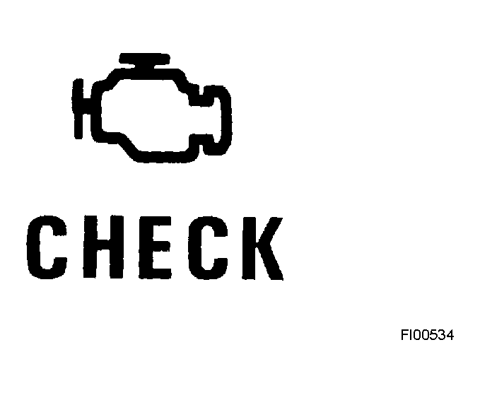

Diagnosis System
- DESCRIPTION
When troubleshooting On-Board Diagnostics (OBD II) vehicles, the intelligent tester (complying with SAE J1987) must be connected to the Data Link Connector 3 (DLC3) of the vehicle. Various data in the vehicle's Engine Control Module (ECM) can then be read.

Courtesy of © TOYOTA, LICENSE AGREEMENT TMS1002OBD II regulations require that the vehicle's on-board computer illuminates the Malfunction Indicator Lamp (MIL) on the instrument panel when the computer detects a malfunction in:
- The emission control systems components
- The power train control components (which affect vehicle emissions)
- The computer itself
In addition, the applicable Diagnostic Trouble Codes (DTCs) prescribed by SAE J2012 are recorded in the ECM memory. If the malfunction does not reoccur in 3 consecutive trips, the MIL turns off automatically but the DTCs remain recorded in the ECM memory.
To check the DTCs, connect the intelligent tester to the DLC3. The tester displays DTCs, freeze frame data, and a variety of engine data. The DTCs and freeze frame data can be erased with the tester. In order to enhance OBD function on vehicles and develop the Off-Board diagnosis system, the Controller Area Network (CAN) communication is used in this system. It minimizes the gap between technician skills and vehicle technology.
CAN is a network which uses a pair of data transmission lines that span multiple ECUs and sensors. It allows high speed communication between the systems and simplifies the wire harness connections. The CAN Vehicle Interface Module (CAN VIM) must be connected with the intelligent tester to display any information from the ECM. The intelligent tester and ECM uses CAN communication signals to communicate. Connect the CAN VIM between the intelligent tester and DLC3.
- NORMAL MODE AND CHECK MODE
The diagnosis system operates in normal mode during normal vehicle use. In normal mode, 2 trip detection logic is used to ensure accurate detection of malfunctions. Check mode is also available as an option for technicians. In check mode, 1 trip detection logic is used for simulating malfunction symptoms and increasing the system's ability to detect malfunctions, including intermittent problems (intelligent tester only).
- TRIP DETECTION LOGIC
When a malfunction is first detected, the malfunction is temporarily stored in the ECM memory (1st trip). If the same malfunction is detected during the next subsequent drive cycle, the MIL is illuminated (2nd trip).
- FREEZE FRAME DATA
Freeze frame data records the engine conditions (fuel system, calculated engine load, engine coolant temperature, fuel trim, engine speed, vehicle speed, etc.) when malfunctions are detected. When troubleshooting, freeze frame data can help determine if the vehicle was moving or stationary, if the engine was warmed up or not, if the air-fuel ratio was lean or rich, and other data from the time the malfunction occurred.
- DATA LINK CONNECTOR 3 (DLC3)
The vehicle's ECM uses the ISO 15765-4 for communication protocol. The terminal arrangement of the DLC3 complies with SAE J1962 and matches the ISO 15765-4 format.
DLC3 TERMINAL NUMBER - CONDITIONSSymbols Terminal No. Names Reference terminal Results Condition SIL 7 Bus "+" line 5 - Signal ground Pulse generation During transmission CG 4 Chassis ground Body ground 1 Ω or less Always SG 5 Signal ground Body ground 1 Ω or less Always BAT 16 Battery positive Body ground 9 to 14 V Always CANH 6 CAN "High" line CANL 54 to 69 Ω Ignition switch OFF CANH 6 CAN "High" line Battery positive 1 MΩ or higher Ignition switch OFF CANH 6 CAN "High" line CG 1 kΩ or higher Ignition switch OFF CANL 14 CAN "Low" line Battery positive 1 MΩ or higher Ignition switch OFF CANL 14 CAN "Low" line CG 1 kΩ or higher Ignition switch OFF If the result is not as specified, the DLC3 may have a malfunction. Repair or replace the harness and connector.
HINT:
Connect the cable of the intelligent tester to the DLC3, turn the ignition switch ON and attempt to use the tester. If the display indicates that a communication error has occurred, there is a problem either with the vehicle or with the tester.
If communication is normal when the tester is connected to another vehicle, inspect the DLC3 of the original vehicle.
If communication is still not possible when the tester is connected to another vehicle, the problem may be in the tester itself. Consult the Service Department listed in the tester's instruction manual.
- BATTERY VOLTAGE
Battery Voltage: 11 to 14 V
If the voltage is below 11 V, recharge or replace the battery before proceeding.
- MIL (Malfunction Indicator Lamp)
- The MIL is illuminated when the ignition switch is first turned ON (the engine is not running).
- The MIL should turn OFF when the engine is started. If the MIL remains illuminated, the diagnosis system has detected a malfunction or abnormality in the system.
HINT:
If the MIL is not illuminated when the ignition switch is first turned ON, check the MIL CIRCUIT .
- ALL READINESS
For the vehicle, using the intelligent tester allows readiness codes corresponding to all DTCs to be read. When diagnosis (normal or malfunctioning) has been completed, readiness codes are set. Enter the following menus on the intelligent tester: ENHANCED OBD II / MONITOR STATUS.